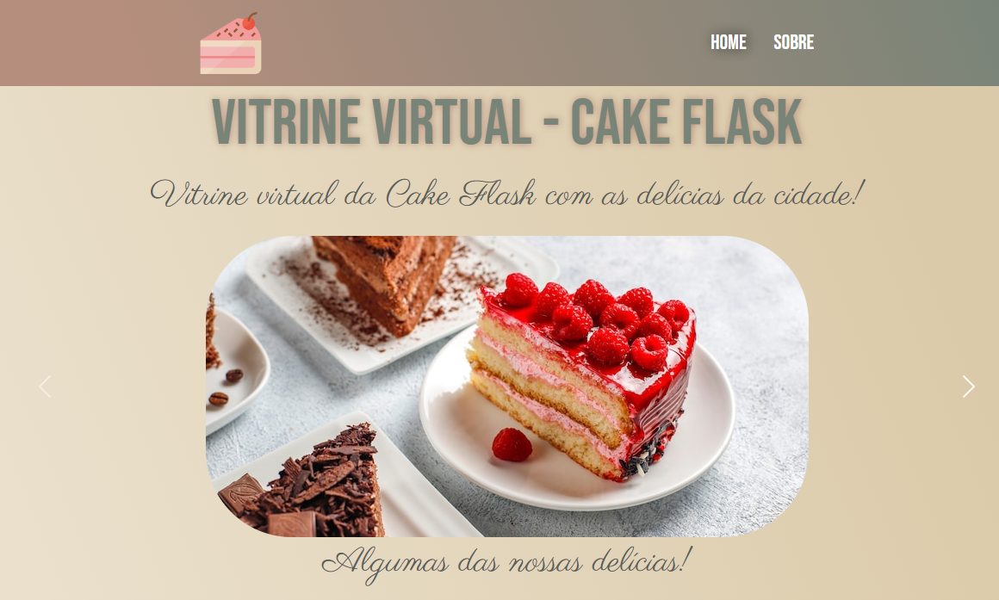

Projetos


Nesta página você vai encontrar alguns projetos realizados.
Pizza Pan - Dando sabor às memórias!
Projeto de site e cardápio para pizzaria simplificado com HTML e CSS.

Clique aqui para conhecer!
Blog Interrupted Dreamer
Layout modificado e blog pessoal voltado à literatura. Linguagens utilizadas: HTML, CSS, Javascript.

Clique aqui para conhecer!
Vitrine Virtual - Cake Flask
Projeto fictício de Confeitaria Virtual para exibição de produtos utilizando Python e Flask.
Clique aqui para conhecer!